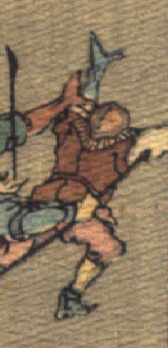

走って逃げる鬼。甲のようなものをかぶり、茶色の着物に桃色の股引を身に着けている。両腕を上げて走っている。
出典：親書誌：U426_nichibunken_0113：Les Ogres d'Oyeyama／日付：2006／資源識別子：U426_nichibunken_0113_0006_0007
Copyright (c)2010- International Research Center for Japanese Studies, Kyoto, Japan. All rights reserved.